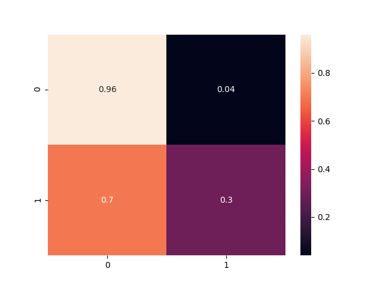
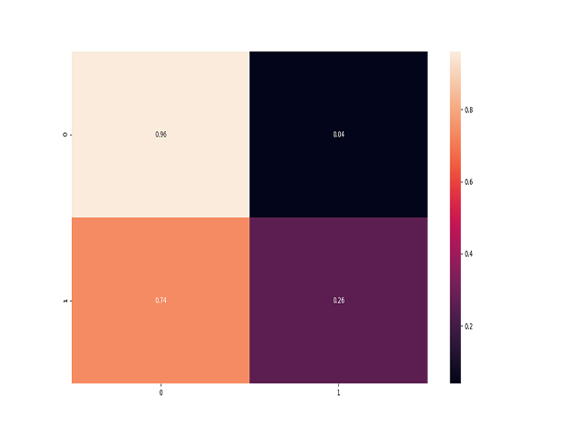

Grumpy cat
An hatespeech detection AI
A project by Gertjan De Smet and Tibo Vanheule
classic vs state of the art
Models
Word vs Char
Word-based
Better for sentiment
Character-based
Better against spaces attack
model
LSTM
illusions?
Adversial examples
Adversial examples categories
-
Word modification
insertion, deletions and swapping. -
Space manipulation
deletion and insertion of spaces. -
Benign word insertion
Love.
workflow?
Solutions
Text preprocessing
Some small steps first.
-
01. Smiley
Translate to a descriptive text for the AI.
-
02. Concatenations
I'm
-
03. URL
HTTP: // tibovanheule . space
-
04. @ and #
remove entity's.
Text preprocessing
More steps.
-
05. Letter substitution
@ = a.
-
06. tokenize
[this, is , a, list]
Word boundary
* * *
dghjkhellondde
hello
Word segmentation
* * *
Addspacestothissentence
Add spaces to this sentence
Text preprocessing
Even more steps.
-
11. Leestekens
@ = a.
-
12. Repeats and spellchecker
Oooooooooooooooooh wow, that's long.
Training results
-
logistic regression

Training results
-
logistic regression Character based

Extra dataset
* * *
Dataset without tweetid
Not used for training or validation
Used to create adversial dataset
45% chance for word boudary attack
A random prefix/suffix of length 2-6
50% chance for space add attack
50% chance for space removal attack
Training results
-
logistic regression Character based
Relevant info
- The slides:www.ai.tibovanheule.space/slides/
- Docs:www.ai.tibovanheule.space/doc/
- Web interface:www.ai.tibovanheule.space/